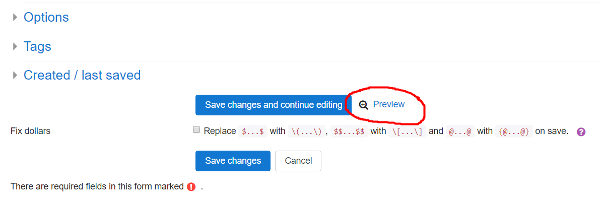

Authoring quick start 1: a minimal working question
1 - First question | 2 - Question variables | 3 - Feedback | 4 - Randomisation | 5 - Question tests | 6 - Multipart questions | 7 - Simplification | 8 - Quizzes
The authoring quick start guide shows you how to write STACK questions. Part 1 gets a minimal question working. The following video explains the process:
Before you begin
We assume the following:
- You have access to a course with STACK installed.
- You are familiar with simple formatting for mathematics. Some basic examples are provided in the CASText#Useful_LaTeX documentation.
Creating a minimal STACK question
Go to your Course, navigate to the question bank and create a new question with the "STACK" question type.
There are lots of fields, but only a few are compulsory:
- The "question name",
- The "question text", which is shown to the student,
- The teacher's "model answer" (inside "Input: ans1" on a default question),
- A test of "correctness".
By default a new question automatically has one input, and one algorithm to test correctness of the answer.
Question name
You must give the question a name, for example question1.
Question text
Let's focus on the problem of differentiating with respect to . We need to write the question text itself. Copy the following into the Question text box:
Differentiate \((x-1)^3\) with respect to x.
[[input:ans1]] [[validation:ans1]]
Notes:
- Moodle has a wide choice for text editors, so the screenshots in this quick start guide might look slightly different to your variant of Moodle. Also, the cut and paste may or may not include some of the formatting.
- The text contains LaTeX mathematics environments. Do not use mathematics environments
$..$and$$..$$. Instead you must use\(..\)and\[..\]for inline and displayed mathematics respectively. (There is an automatic bulk converter if you have a lot of legacy materials.) - Internally the student's answer will be assigned to a variable
ans1. - The tag
[[input:ans1]]denotes the position of the box into which the student puts their answer. - The tag
[[validation:ans1]]will be replaced by any feedback related to the validity of the inputans1, e.g. syntax errors caused by missing brackets. - These tags could be positioned anywhere in the question text.
Input: ans1
Scroll down: there will be an inputs section of the editing form. Click on the header Input: ans1 to reveal the relevant settings.
For a minimal question, we must specify the model answer. Let this be
3*(x-1)^2
Notes
- The student's response is stored in the answer variable
ans1. - The model answer must be a syntactically valid expression in CAS (Maxima) syntax, not LaTeX. This means multiplication must be explicitly specified, using
*. - Inputs can have a variety of types selected by the Input type drop-down menu. The Algebraic input is the default, and what we need here.
- A question can have many inputs for multiple parts. These are discussed later in a later part.
Assessing correctness of a response - the Potential Response Tree (PRT)
Next we have to decide if the student's answer is correct.
To grade the student's response, we need to determine its mathematical properties using an algorithm known as a potential response tree.
By default, a new question contains one potential response tree called prt1. Feedback generated by the tree replaces the tag [[feedback:prt1]] at the appropriate time.
Configuring a potential response node
A potential response tree is a non-empty acyclic directed graph of potential response nodes. By default, we have one potential response node. At each node
SAnsis compared toTAnswith the answer test, possibly with an option,- If
true, then we execute thetruebranch, - If
false, then we execute thefalsebranch.
Each branch can then
- Assign/update the score,
- Assign formative feedback to the student,
- Leave an answer note for statistical reporting purposes,
- Continue to the next potential response node, or end the process with
[stop].
Let us configure the first node to determine if the student has differentiated correctly.
- Specify the variable
ans1in theSAnssetting. - Specify the correct answer in the
TAnssetting:3*(x-1)^2. - Confirm we have
AlgEquivin the Answer test drop-down menu (this is the default).
Saving the question
Now scroll to the bottom of the page and press [Save changes and continue editing]. If the question fails to save, check carefully for any errors, correct them and save again.
We now have a minimal question.
To recap, we have
- The "question name",
- The "question text",
- The teacher's "model answer",
- A test of "correctness".
Next we should try out our question by pressing the Preview link at the bottom of the page.

Previewing the question
To speed up the testing process, scroll down on the preview window and under Attempt options make sure you have "How questions behave" set to "Adaptive Mode". If necessary, "Start again with these options". This will allow you to check your answers without having to Submit and Start again repeatedly.
With the preview open, try typing
3*(x-1)^2
in the answer box. The system first establishes the syntactical validity of this answer.
Press the [Check] button.
The system executes the potential response tree and establishes whether your answer is equivalent to the model answer 3*(x-1)^2.
Student validation
Notice that there is a two-step process for the student to enter their answer.
First is "validation", and normally servers have "instant validation" enabled. If the expression is valid, STACK shows the student "Your last answer was interpreted as follows:" and displays their expression. An invalid response creates an error message.
The second stage executes when a valid expression is entered, and this evaluates the potential response tree to assess the student's answer.
This two-stage process is a unique and essential feature of STACK. There are lots of options for validation to help the student. For example, in the above, all example expressions have strict syntax. Here we used expressions like 3*(x-1)^2, with * symbols to denote multiplication. You could choose to let students type in expressions like 3(x-1)^2 and accept implied multiplication. Note, however, that teacher input will always have to be strict to avoid ambiguity. Documentation on these options is given in the inputs section.
Next step
You should now be able to write a simple question in STACK.